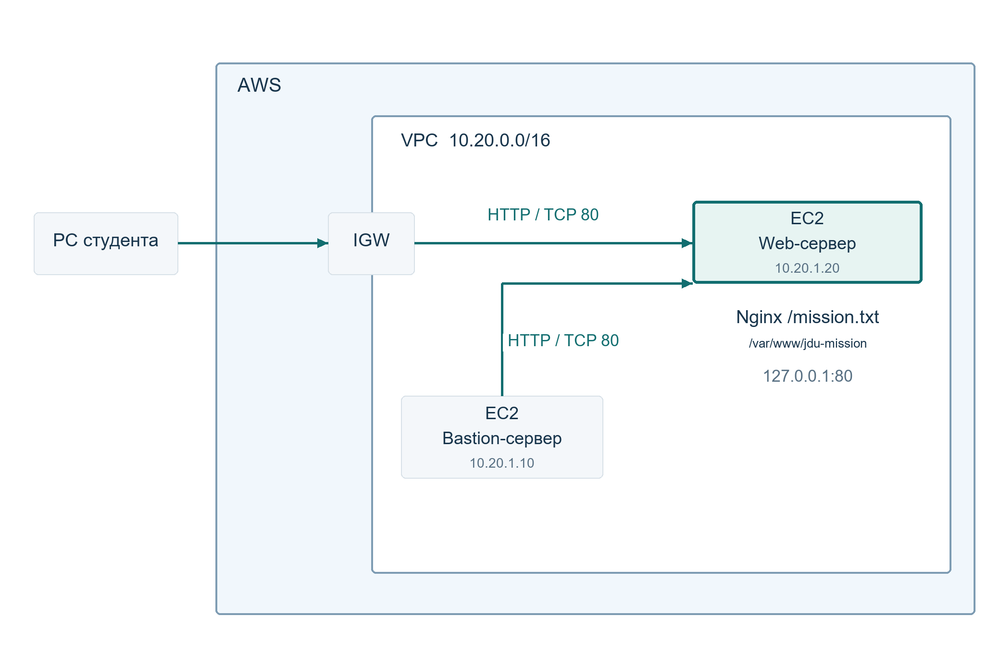

Web Infrastructure: самостоятельные задания M0-M5
Первая редакция для проверки преподавателем. Полное прохождение по пособию студентом ещё не проверено.
Русский и узбекский тексты синхронизированы с японским оригиналом. Редактура носителями языка ещё не выполнена.
Практика P0–P5 · Задания M0–M5
Как пользоваться пособием
Используйте шаги из практики P, чтобы добавить файлы и настройки задания в ту же учебную среду. Сверяйтесь со значениями в каждом M и соответствующими шагами P.
P0 → M0 → P1 → M1 → P2 → M2 → P3 → M3 → P4 → P5 → M4 → M5
Завершите тренировочные настройки в P5. Затем в M4 подключите то же приложение к основной базе.
M0 Своя среда и место выполнения команд (4)
Требуемый результат
Воспользуйтесь способом подключения из P0 и откройте Session Manager для четырёх серверов. В списке EC2 нажмите Instance ID нужного сервера, затем стрелку справа от Connect и Connect with SSM Session Manager. На каждом сервере войдите как ssm-user и создайте в своём домашнем каталоге файл m0-connection.txt с одной строкой из таблицы.
| Сервер | Окончание имени в EC2 | Содержимое файла |
|---|---|---|
| Сервер БД | -db |
db |
| DNS-сервер | -dns |
dns |
| Сервер пакетов | -repo |
repo |
| Сервер Bastion | -bastion |
bastion |
Выберите M0 на странице заданий. За каждый верный файл начисляется 1 балл, всего можно получить 4 балла.
Подключение к серверам

Зелёные стрелки ведут к четырём серверам для M0.

Список Instances в EC2. Для P0 выберите строку с окончанием имени -web, для M0 - -db, -dns, -repo и -bastion по очереди.

Страница EC2. Нажмите стрелку справа от Connect и выберите Connect with SSM Session Manager. На снимке показан Web-сервер.
Проверка и отправка
- Откройте страницу заданий, которую использовали в P0. Войдите через учебный аккаунт Google и выберите свой Lab и M0.
- Запустите проверку выбранного задания.
- Во время обработки обновляйте результат. Посмотрите, сколько критериев выполнено. Внесите нужные исправления и проверьте снова. Результат сохраняется автоматически.
M1 Выдача статического файла по HTTP (8)
Требуемый результат
На том же Web-сервере выдавайте /var/www/jdu-mission/mission.txt по TCP-порту 80 как /mission.txt. Сохраните файл и настройки P1: /practice.txt должен оставаться доступным.
- Файл (P1.2). Создайте
/var/www/jdu-missionи разместитеmission.txtс текстом ниже. Владелец -root, группа -www-data, права -0640. - Настройки Nginx (P1.3). В существующий
serverдля порта 80 в/etc/nginx/sites-available/defaultдобавьтеlocationс точным совпадением/mission.txtи root/var/www/jdu-mission. Сохраните блок P1, проверьте синтаксис и перечитайте настройки. - HTTP и журнал (P1.4-P1.6). Откройте
/mission.txtс Web и бастиона: должны вернуться HTTP 200 и текст ниже. Проверьте доступность/practice.txtи записи запросов в access log.
Схема задания

- Файл для публикации
/var/www/jdu-mission/mission.txt - Путь URL
/mission.txt
JDU WEB-02 mission: independent HTTP delivery.
Критерии оценки
Каждый критерий даёт 1 балл.
| № | Условие |
|---|---|
| 1 | Nginx работает (active). |
| 2 | nginx -t проходит; location /mission.txt задаёт root /var/www/jdu-mission. В M1 также сохранена конфигурация P1. |
| 3 | Порт 80 слушает private IP/все интерфейсы, не только loopback. |
| 4 | /var/www/jdu-mission/mission.txt: обычный файл, точный текст, владелец root, группа www-data, права 0640. |
| 5 | Сам Web получает HTTP 200 и нужный текст; в M1 также доступен /practice.txt. |
| 6 | Бастион получает HTTP 200 и точный текст через private IP. |
| 7 | CloudShell получает HTTP 200 и точный текст через public IP. |
| 8 | Access log содержит запрос с nonce именно этой проверки. |
Проверка и отправка
- Откройте страницу оценок и выберите M1.
- Запустите проверку выбранного задания.
- По завершении появятся число выполненных критериев и результат каждого. Исправьте пункты с пометкой «Исправить» и запустите проверку снова. «Не проверен» означает, что результат определить не удалось. Баллы отображаются в списке заданий.
M2 Внутренний DNS и системное разрешение имён (13)
Требуемый результат
Перед началом убедитесь на странице оценок, что за M1 получен полный балл.
Добавьте шесть имён из таблицы во внутренний DNS, настроенный в P2. С бастиона должен открываться адрес http://web.lab.test/mission.txt.
- DNS-сервер (P2.2-P2.4). Добавьте A-записи в существующую зону
lab.test. Увеличьте серийный номер зоны, проверьте синтаксис и перечитайте настройки. Имена из P2 можно сохранить. - Бастион и Web-сервер (P2.5-P2.8). Проверьте прямой запрос к внутреннему DNS и обычное разрешение имён ОС. На бастионе откройте текст M1 по имени
web.lab.test. На Web проверьте, чтоdb.lab.testразрешается в10.20.2.20.
Схема задания

| DNS name | A / IPv4 |
|---|---|
| admin.lab.test | 10.20.1.20 |
| bastion.lab.test | 10.20.1.10 |
| db.lab.test | 10.20.2.20 |
| dns.lab.test | 10.20.2.10 |
| repo.lab.test | 10.20.2.30 |
| web.lab.test | 10.20.1.20 |
Критерии оценки
Каждый критерий даёт 1 балл.
| № | Условие |
|---|---|
| 1 | BIND/named работает (active). |
| 2 | Проверки named и zone lab.test завершаются успешно. |
| 3 | SOA/NS zone lab.test и авторитетный ответ соответствуют схеме; NS - dns.lab.test. |
| 4 | Все заданные A-записи profile дают нужные private IP; это один пункт. |
| 5 | И бастион, и Web получают правильные ответы по UDP 53. |
| 6 | И бастион, и Web получают правильные ответы по TCP 53. |
| 7 | Обычный resolver бастиона/Web использует только BIND; нет подмены hosts или Firefox DoH. |
| 8 | С бастиона HTTP по имени profile и заданному пути возвращает 200 и правильный текст. |
| 9 | Обычный resolver Web разрешает имя DB profile в 10.20.2.20. |
| 10 | Forward only направлен только на 10.20.0.2; внешнее DNS-имя разрешается. Внешний HTTP не нужен. |
| 11 | Новое отсутствующее имя этого запуска получает авторитетный NXDOMAIN. |
| 12 | Query/recursion/cache разрешены только localhost, бастиону и Web в BIND; одного SG недостаточно. |
| 13 | AXFR с бастиона/Web явно отклоняется при успешных обычных запросах того же запуска; таймаут не подходит. |
Проверка и отправка
- Откройте страницу оценок и выберите M2.
- Запустите проверку выбранного задания.
- По завершении появятся число выполненных критериев и результат каждого. Исправьте пункты с пометкой «Исправить» и запустите проверку снова. «Не проверен» означает, что результат определить не удалось. Баллы отображаются в списке заданий.
M3 Подключение к PostgreSQL с аутентификацией (9)
Требуемый результат
Перед началом убедитесь на странице оценок, что за M2 получен полный балл.
В PostgreSQL из P3 создайте основную БД и две роли, указанные ниже. Таблицы приложения создаются в M4.
- DB-сервер (P3.2-P3.6). Создайте БД и роли и разрешите подключение к нужной БД с указанными ролями только с Web-сервера (
10.20.1.20/32). Используйте SCRAM, как в P3. - Web-сервер (P3.7-P3.8). Подключитесь к
db.lab.testпод рабочей ролью и выполните SELECT. Сохраните существующий пароль для профиляmissionтем же способом, что и в P3.8.
Схема задания

| Настройка | Значение |
|---|---|
| Имя базы данных | jdu_catalog |
| Роль настройки | catalog_setup |
| Рабочая роль | catalog_app |
Критерии оценки
Каждый критерий даёт 1 балл.
| № | Условие |
|---|---|
| 1 | PostgreSQL 16/main работает (active). |
| 2 | Настройки 16/main, стандартный data directory и socket/peer для OS postgres корректны. |
| 3 | PostgreSQL слушает 10.20.2.20:5432. |
| 4 | Владельцем БД и schema public является соответствующая setup-role. |
| 5 | Runtime LOGIN; нет superuser/CREATEDB/CREATEROLE/REPLICATION/BYPASSRLS и повышающих membership. Setup LOGIN при сборке или NOLOGIN после неё. |
| 6 | HBA допускает SCRAM лишь для перечисленных DB/role с Web /32, без широких разрешений. |
| 7 | Новый аутентифицированный SELECT с Web возвращает нужные DB/user/значение; P по IP, M через обычный DNS. |
| 8 | Один неверный пароль явно отклонён в том же запуске, где правильный работает. |
| 9 | С Web запрещены postgres-role, посторонняя DB и чужой profile; ещё не созданная practice DB не обязательна. |
Проверка и отправка
- Откройте страницу оценок и выберите M3.
- Запустите проверку выбранного задания.
- По завершении появятся число выполненных критериев и результат каждого. Исправьте пункты с пометкой «Исправить» и запустите проверку снова. «Не проверен» означает, что результат определить не удалось. Баллы отображаются в списке заданий.
M4 Соединить предоставленное приложение с Web и DB (13)
Требуемый результат
Перед началом убедитесь на странице оценок, что за M2, M3 получен полный балл.
Подключите приложение инвентаризации из P4 к основной БД из M3. Перед переключением завершите настройку тренировочного профиля в P5.
- Web-сервер (P5.3, P4.4-P4.5). Остановите приложение и выберите профиль
mission. Используйте уже развёрнутое приложение. Создайте таблицы, исходные данные и учётную запись администратора в основной БД. - DB- и Web-серверы (P4.6-P4.8). Назначьте права рабочей роли и запустите приложение. Откройте публичную и административную страницы. Убедитесь, что
/practice.txtи/mission.txtвсё ещё доступны. - Бастион (P4.9). Войдите в
http://admin.lab.test:8080/admin/какlab_adminи внесите две записи из таблицы. На публичной странице проверьте опубликованную запись.
Схема задания

| Код | Название | Количество | Место хранения | Публикация |
|---|---|---|---|---|
M5-PUBLIC-001 |
Mission monitor | 6 | Lab cabinet C | Да |
M5-PRIVATE-001 |
Mission router | 1 | Lab cabinet D | Нет |
Критерии оценки
Каждый критерий даёт 1 балл.
| № | Условие |
|---|---|
| 1 | Код и зависимости точно соответствуют предоставленной фиксированной версии. |
| 2 | jdu-catalog active и enabled, работает как catalog. |
| 3 | Gunicorn слушает только 127.0.0.1:8000. |
| 4 | Активный процесс использует DB и runtime-role нужного profile. |
| 5 | Фиксированные migrations, 11 таблиц и нужные sequence находятся в выбранной БД. |
| 6 | Обе обязательные записи совпадают с параметрами profile; дополнительные допустимые записи разрешены. |
| 7 | Обычный публичный URL получает правильные записи из действующей БД. |
| 8 | С бастиона через обычный DNS доступна настоящая форма /admin/ на admin.lab.test:8080. |
| 9 | Static-ресурсы доступны по предусмотренному маршруту. |
| 10 | Функциональный режим проходит настоящий password/CSRF/cookie login, без обхода аутентификации. |
| 11 | В этом запуске через admin HTTP создана одна CK-запись; значения совпали в DB и публичной странице. |
| 12 | Количество именно этой CK-записи изменено; DB и публичная страница подтверждают изменение. |
| 13 | POST logout завершает сессию: прежний cookie снова требует входа. |
Проверка и отправка
- Откройте страницу оценок и выберите M4.
- Выберите функциональную проверку с правами, скрыто введите существующий пароль lab_admin в поле администратора приложения и запустите с этим паролем. Это не пароль RDP. Проверка только настроек не подтверждает функции.
- По завершении появятся число выполненных критериев и результат каждого. Исправьте пункты с пометкой «Исправить» и запустите проверку снова. «Не проверен» означает, что результат определить не удалось. Баллы отображаются в списке заданий.
M5 Минимальные права и границы публикации (16)
Требуемый результат
Перед началом убедитесь на странице оценок, что за M4 получен полный балл.
Переведите приложение M4 в обычный режим работы способом из P5. Закройте доступ, нужный только при настройке, и сохраните необходимые права приложения и администратора.
- DB-сервер (P5.1-P5.2). Проверьте права
catalog_app. Запретите вход для роли настройкиcatalog_setup, удалите её пароль и завершите оставшиеся соединения. - Web-сервер (P5.3-P5.4). Уберите временные настройки (
/etc/jdu-catalog/setup.envи/etc/jdu-catalog/profiles/mission.setup.env) и запустите приложение с рабочим профилемmission. Пользователь сервиса не должен менять код. Файлы с секретами принадлежатroot:rootи имеют права0600. - Открытая и административная страницы (P5.4-P5.5). На порту 80 должна отображаться только публичная запись из M4. Откройте панель управления с бастиона на порту 8080 и проверьте, что
lab_adminможет просматривать, добавлять и изменять предметы.
Схема задания

Критерии оценки
Каждый критерий даёт 1 балл.
| № | Условие |
|---|---|
| 1 | Публичный порт 80 не открывает admin даже с поддельными Host/header; частный путь при этом работает. |
| 2 | Секреты - обычные root:root 0600 файлы, без ссылок и раскрытия значений. |
| 3 | catalog без login/sudo не может менять код, venv и их управляющие каталоги. |
| 4 | Проверяемые env/секретные пути не доступны через HTTP или static. |
| 5 | Setup-role NOLOGIN/password NULL, её сессии закрыты, временные setup.env удалены. |
| 6 | catalog_item: только SELECT/INSERT/UPDATE, без DELETE, TRUNCATE и передачи прав. |
| 7 | auth_user: SELECT и UPDATE только last_login/password, без создания/удаления пользователей. |
| 8 | Таблицы групп, permissions, связей и content type доступны только для SELECT. |
| 9 | django_session: только необходимые SELECT/INSERT/UPDATE/DELETE, без лишних прав. |
| 10 | django_admin_log: только SELECT/INSERT. |
| 11 | У runtime нет прав на django_migrations, schema CREATE, владения объектами и незаданных дополнительных прав. |
| 12 | USAGE только sequence оборудования и admin-log; без лишних SELECT/UPDATE/GRANT. |
| 13 | Активный staff, не superuser: только view/add/change оборудования, без delete/user management. |
| 14 | Анонимные добавление/изменение отклонены без изменения БД при успешном контрольном login; одного CSRF-403 мало. |
| 15 | Один неверный пароль приложения отклонён, при этом правильный login работает. |
| 16 | Все найденные непубличные коды скрыты на публичной странице при доступной БД. |
Проверка и отправка
- Откройте страницу оценок и выберите M5.
- Выберите функциональную проверку с правами, скрыто введите существующий пароль lab_admin в поле администратора приложения и запустите с этим паролем. Это не пароль RDP. Проверка только настроек не подтверждает функции.
- По завершении появятся число выполненных критериев и результат каждого. Исправьте пункты с пометкой «Исправить» и запустите проверку снова. «Не проверен» означает, что результат определить не удалось. Баллы отображаются в списке заданий.